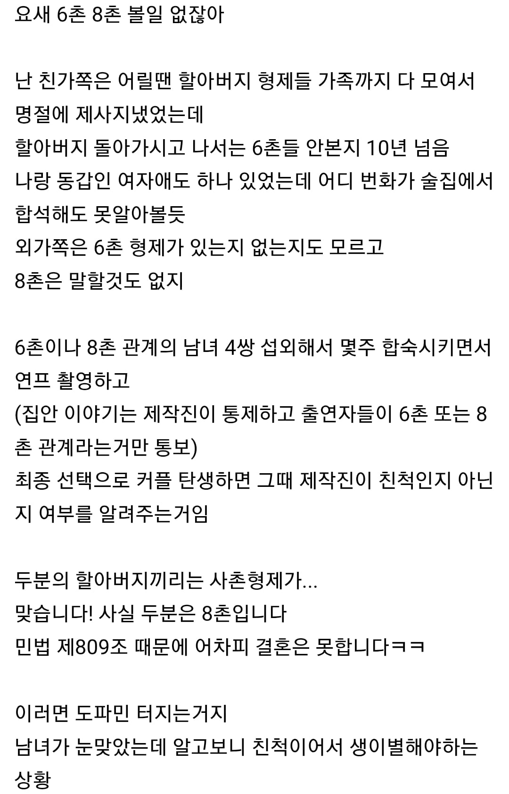

96 · 7 · 11 시간 전 · 원문

수집 당시 댓글 7개
냉동블루베리 · 1 시간 전
와 ㅈㄴ 재밌겠다
어리석은중생 · 1 시간 전
8촌 6촌인거 나도 모르는데 나라에서 알아?
↳ 답글 · 그리피스 · 53 분 전
모를리가 있을까
나는화내지않습니다 · 58 분 전
ㅋㅋㅋ
야옹몬 · 45 분 전
섹파는 합법임
유루캠 · 25 분 전
ㅋㅋㅋㅋㅋㅋㅋㅋㅋㅋㅋ
이미사용중인닉 · 25 분 전
개인정보보호법 무시해야 출연 섭외 가능한 거 아님?
와 ㅈㄴ 재밌겠다